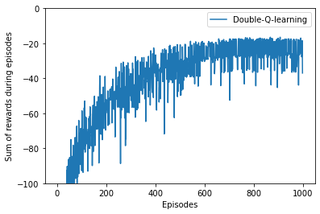

Consider a larger version of the Random Walk problem. Now we have 19 states instead of 5 and the left terminal state gives a reward of -1. The starting state is still the centre state.
Task: - Implement the off-line \(\lambda\)-return / TD(\(\lambda\)) algorithm: - Compare the RMS(root mean square) error averaged over the 19 states between the predictions at the end of the episode for the 19 states and their true values, over the first 10 episodes, and over 10 runs (10 different sequence of walks). In other words, for each run, you generate 10 episodes and use TD(\(\lambda\)) to learn the value. Then you calculate the difference between the learned value and the true value, square the difference, average it over 10 runs and take the square root.
Plot the averaged RMS error vs \(\alpha\) values for the following \(\lambda\)-values:
Number of current run: 1
Number of current run: 2
Number of current run: 3
Number of current run: 4
Number of current run: 5
Number of current run: 6
Number of current run: 7
Number of current run: 8
Number of current run: 9
Number of current run: 10
Number of current run: 1
Number of current run: 2
Number of current run: 3
Number of current run: 4
Number of current run: 5
Number of current run: 6
Number of current run: 7
Number of current run: 8
Number of current run: 9
Number of current run: 10
def plot_rewards(plots): plt.figure()for plot in plots: method, method_title = plot plt.plot(method, label=method_title)# plt.plot(r_qlearning, label='Q-learning') plt.xlabel('Episodes') plt.ylabel('Sum of rewards during episodes') plt.ylim([-100, 0]) plt.legend() plt.show()rewards_double_qlearning /= runs plot_rewards([[rewards_double_qlearning, 'Double-Q-learning']])

def print_optimal_policy(policy, method): policy_display = np.empty_like(policy, dtype=str)for i inrange(0, world_height):for j inrange(0, world_width):if [i, j] == [3, 11]: policy_display[i, j] ='G'continueif i ==3and j in np.arange(1,11): policy_display[i, j] ='C'continue a = policy[i, j]if a == up: policy_display[i, j] ='U'elif a == left: policy_display[i, j] ='L'elif a == right: policy_display[i, j] ='R'elif a == down: policy_display[i, j] ='D'print(method +' Optimal policy is:')for row in policy_display:print(row)optimal_policy = np.argmax(q1_double_qlearning + q2_double_qlearning, axis=2)print_optimal_policy(optimal_policy, 'Double Q-Learning')